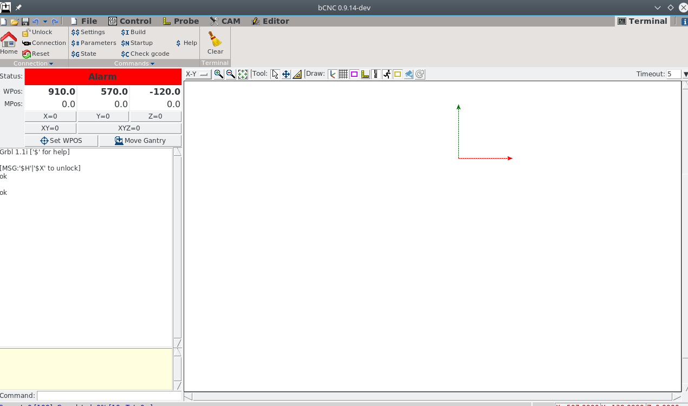

bCNC: control your machine
bCnc - as the authors claim:
GRBL CNC command sender, autoleveler, g-code editor, digitizer, CAM and swiss army knife for all your CNC needs.
This is not exaggeration - and the bets is: due to being written in python, you can use it under every operating system supporting python!
Step 1 - prepare
- install python on your system later connected to your controller (via usb)
- install the python packages python-tk, python-pip
- install bCNC using pip from your command line
# on linux systems
apt-get install python python-tk python-pip
pip install bcnc
On windows follow these instructions.
Step 2 - connect your machine to bCNC
- power on your controller, connect via usb
- on the command line
python -m bCNC
- you should see
Your machine is not connected yet. Now:- fill out Port (left, mid in the Serial section). This is just what you used to flash the firmware, in my case /dev/ttyUSB0
- you can chekc connect on startup if you like
- keep Controller: GRBL1 for now (we will check this next)
- hit open. You should now have:
- your machine is connected (the usb plug symbol is shaded in green)
- we are in alarm state. This is intended as far as I have understood. You need to clear this state explicitly. It prevents you from mistakenly damage your machine while not being aware of what you are doing.
Step 3 - check configuration basics
- on the upper right click on Terminal

- in the left column below Alarm there is now the Command input (right at the bottom).
- in the the mid you see the output of grbl (the result of your commands)
- in the left column below Alarm there is now the Command input (right at the bottom).
- grbl starts with reporting the current version of firmware running on your controller - in my case Grbl1.1i - so no need to change the controller version field in the 'Serial' pane.
ONLY if you are running on **an older version** e.g. grbl 0.9x:
- hit File on the topmost menue
- re-click the usb adapter symbol to diconnect
- select a matching controller version
- reconnect
Please check the follwoing configuration carfully and adapt accordingly!
- the greeting message also tells us how to unlock the machine:
$X to unlock - don't do it now! - on the command promt enter $$, hit enter: in the output pane, we now have all the settings stored on your controller in the EEPROM (persitent for power off/on)
Step 4 - detailed configuration → $x=what_you_need
Preamble
We are focusing here on the gantry setup having dual motors per axis x (x & xc) and y (y & yc) - don't remember? check again here.
Default grbl uses only 3 axis and bCNC in his machine settings interface supports only 3 axis →ignore CAM>config.
Use the command line or CAM>controller interface to configure your machine settings.
This is the working configuration (available on on my git hub) we will work through in the following.
To copy a setting to your machine - just copy & paste to the command promt line by line.
WARNING:
although grbl stores the settings in the EEPROM and should apply them immediately,
I sometimes needed to power off/on the controller for the (correctly reported
settings - check by $$) have been effective!
 We will go through the most important settings in the following. All settings not explicitly discussed can just be copied over. Have a read in the grbl docu for detailed information.
We will go through the most important settings in the following. All settings not explicitly discussed can just be copied over. Have a read in the grbl docu for detailed information.
Step direction - $3
$3=val where val encodes which axis to be inverted. See the following table how to calculate val.
I have the default mpcnc wiring.
Surprisingly, I ended up (4th row) with a quite different setting from what would be expected (3rd row).
|:-------------|:-------------:-------------:-------------:------------- |value contribution|2⁴=16|2³=8|2²=4|2¹=2|2⁰=1| |axis|yc|xc|z|y|x| |what we would expect=24|1|1|0|0|0| |what I endded up with=21|1|0|1|0|1|
So how can we safely determine that?:
- on the to menue, select Control
- use $$ to check that you have $5=0; if not issue $5=0
- in the command prompt enter $X (clears the alarm and should unlock the machine→Idle)
If you can't achieve the Idle state, you most probably have an
end stop related alarm, e.g. [xyzxy], which means you misconfigured
your pins →recheck your understanding & config
- set the stepwidth to a small value (as indicated by the red mark)
- set all axis to not inverted: issue $3=0
- for all axis (one after the other):
- make a small step
- note which part of the axis moves opposite to what you want
- place a 1 in the related column of the table shown above, add up and set $3=newSum until the axis moves as you expect
- when done, your machine should move as you expect (regarding the directions)
Working area - $130ff
My mpcnc's working area is 911x571x125(x,y,z)mm, so I use these settings:
$130=911.000 (x max travel, mm)
$131=571.000 (y max travel, mm)
$132=125.000 (z max travel, mm)
$133=911.000 (xcloned max travel, mm)
$134=571.000 (ycloned max travel, mm)
Make sure to have symmetric settings for x/xc and y/yc!
Are you wondering why I use 911 and 571 instead of 910 and 570?
This is because the homing debounce distance (which we'll set to 1mm) will be subtracted from these values and I'd like to see the 910 and 570 in the displays later on.
Acceleration - $120ff
I have a large build and a heavy spindle (dont't follow my example in this regard except you know what you are doing!). I therefore prefer quite low acceleration on x and y:
$120=50.000 (x accel, mm/sec^2)
$121=50.000 (y accel, mm/sec^2)
$122=50.000 (z accel, mm/sec^2)
$123=50.000 (xcloned accel, mm/sec^2)
$124=50.000 (ycloned accel, mm/sec^2)
Start from these values. You might be able to increase them by a factor of 4 (test it carefully). Remember to have x/xc and y/yc exactly symmetric!
Max rate - $110ff
Not much to say here. Keep x/xc and y/yc symmetric
$110=4500.000 (x max rate, mm/min)
$111=4500.000 (y max rate, mm/min)
$112=800.000 (z max rate, mm/min)
$113=4500.000 (xcloned max rate, mm/min)
$114=4500.000 (ycloned max rate, mm/min)
Steps/mm - $100ff
Note: Pablo published quite different settings here. I have the exact setup of the default mpcnc with the lead screw on Z and the T16 timing belts. And came up with these:
$100=200.000 (x, step/mm)
$101=200.000 (y, step/mm)
$102=800.000 (z, step/mm)
$103=200.000 (xcloned, step/mm)
$104=200.000 (ycloned, step/mm)
- to check these, I insert a needle the 1mm clamp of the spindle, put a metal tape measure along one axis (e.g. x), position the neddle at axis_min, travel a specific length and check what the actual travel lenght was.
- recalculate the steps/mm from this
- power on/off the board; I sometimes had issues not doing this especially for these settings
Homing - $23 ff
If you made it this far, your machine moves the desired distances in the right directions.
$23 is the homing dir invert; i have $23=31 which means all axes inverted
|:-------------|:-------------:-------------:-------------:------------- |value contribution|2⁴=16|2³=8|2²=4|2¹=2|2⁰=1| |axis|yc|xc|z|y|x| |defaultmpcnc=31|1|1|1|1|1|
and puts home to the lower left of your machine - that's the mpcnc standard.
Note: the machine should home x and y axis, and leave z as it is.
This behaviour can be configured in config.h l.153 and 154 if
you'd like to change it. You need to recompile / flash in case you changed it.
Next: - trigger each end stop manually and see if it gets displayed as intended (I triggered the x end stop for the following screenshot - note the Idle [x] status, not triggering the end stop, the [x] should disappear again)
-
when all end stops act as intended:
- hands on the emergency off
- enter $H to start the homing sequence
- if anything is not as intended, emergency stop the machine
-
if everything went well, the homing procedure places the machine at the configured homing pull of distance away from the endstops ($27=1.000 mm)
The lower left position in grbl as with professional cnc machines, is always negative working area distance; in my case:
-901/-570
That's it!
I suggest you learn about G54 - G59 if you don't already know whats that.
And get familiar with sending gcode files to your machine.
Have fun!
Feel free to dicuss your questions in the related discussion thread